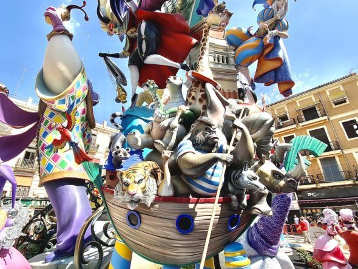

VIVÍ Y DISFRUTÁ LAS FALLAS
Las fallas son una festividad tradicional que se celebra en Valencia en honor a San José, el patrón de los carpinteros. Esta fiesta es conocida por sus monumentales esculturas de cartón, madera y otros materiales que son quemadas al final de la celebración.
Durante las fallas, la ciudad se llena de música, fuegos artificiales y desfiles. Es un evento que atrae a miles de turistas cada año y es una oportunidad única para experimentar la cultura y tradiciones valencianas.